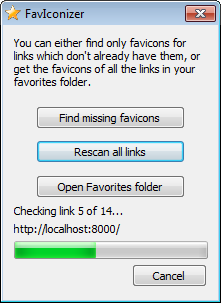

FavIconizer
$ADSENSE_TOP$
If you use Internet Explorer for browsing the web then you know
that for some links you add to your favorites, there is an icon
indicating the webpage. These are called FavIcons. But after a
while these icons get replaced in the favorites with the standard
web icon again because the Microsoft Internet Explorer stores them
in the web cache which gets cleaned up according to your settings,
usually after a few weeks.

Here's where FavIconizer comes to the rescue.

It will scan all links you have in your favorites and check if
the website has a FavIcon. If it has one, FavIconizer will download
that icon and adjust the link in the favorites to use that.
After FavIconizer is finished, you have all the FavIcons back in your favorites.

Now, go to the download page.